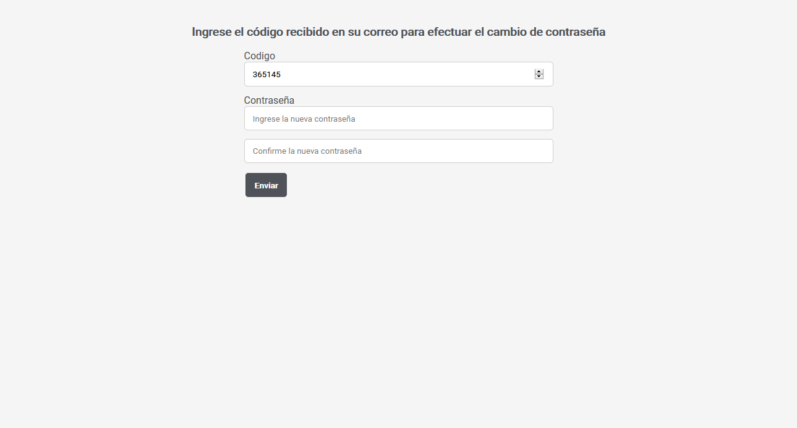
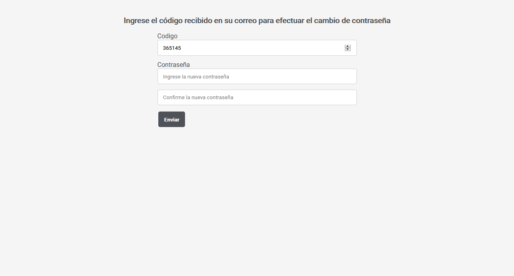

Mercado Tracker
 

Acerca del proyecto
Es una aplicación web que te permite seguir un producto de Mercado Libre y ser notificado por correo cuando su precio o divisa cambie.
Para utilizarla solo hay que crear una cuenta y verificar la dirección de correo electrónico para poder recibir las notificaciones. Una vez dentro basta con pegar la url del producto que nos interesa seguir para que la aplicación lo registre en la base de datos para hacer los chequeos.
El chequeo de cambio de precios se hace cada una hora, por lo tanto las notificaciones podrían no ser inmediatas.
Con respecto a las cuentas de usuario, la aplicación es muy flexible, permite crearlas, borrarlas, y brinda opciones de recuperación de contraseña.